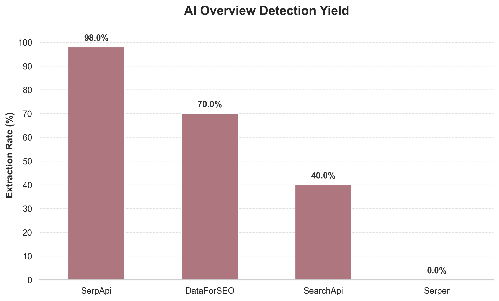
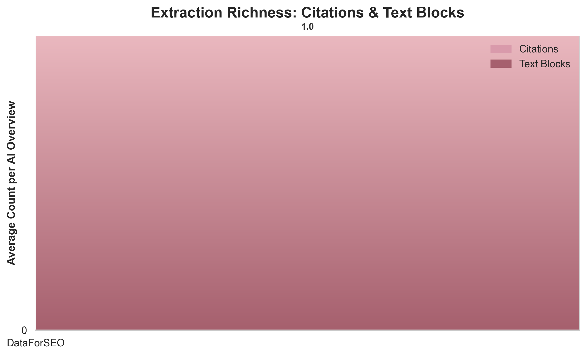

Benchmarking SERP API Fidelity for AI Overviews
AI agents and RAG (Retrieval-Augmented Generation) pipelines that search the web for grounded facts usually rely on a SERP API (Search Engine Results Page Application Programming Interface) to scrape Google and return structured JSON.
For years, baseline metrics such as latency, uptime, and catalog size were sufficient to evaluate these APIs. Every major provider now meets standard expectations for speed and availability, so those metrics no longer differentiate. On modern Google result pages, the most prominent element is the AI Overview: a generative, dynamically assembled answer block that sits at the top of the viewport and synthesizes multi-source information before the standard organic links.
An AI Overview contains nested markdown, ordered lists, embedded citation arrays, and expandable follow-up questions. That structural complexity makes the block difficult to parse. More importantly, AI Overview generation is non-deterministic. Two identical queries sent seconds apart can return different layouts: one request might produce a three-paragraph overview with ten citations, while the next returns a standard list of blue links. Google decides per query whether to generate an overview, and the underlying trigger criteria remain proprietary.
Most existing API comparisons ignore this non-determinism. Standard evaluations fire a single request, check whether a field exists, and declare a winner. That method cannot distinguish a parser failure from a page on which Google never served an overview, and extraction reliability cannot be judged on a feature that is not guaranteed to appear in the source HTML.
This benchmark answers a different, harder question: how often does a SERP API detect an AI Overview that Google actually generated, and how much of its structured content survives the extraction process? That metric captures parsing fidelity, which determines whether a downstream LLM (Large Language Model) receives a rich, well-cited answer or an empty field.
The Competitors
The evaluation covers four major SERP APIs selected to represent three distinct architectural approaches to asynchronous SERP extraction: client-driven two-stage token expansion, server-side flag-driven expansion, and single-pass static DOM scraping. The vendor descriptions and free-tier terms below reflect each provider's published specifications when the dataset was collected in July 2026.
SearchApi
SearchApi implements a two-stage token-expansion architecture tailored for AI-native retrieval workloads, supporting structured extraction across more than 100 search engines. Whenever Google defers AI Overview rendering, the initial search response returns an ai_overview.page_token that the client passes to a dedicated engine=google_ai_overview endpoint to fetch the asynchronous payload. The provider's free tier supplied 100 one-time searches.
SerpApi
SerpApi is the established incumbent in the SERP scraping ecosystem and serves as the baseline parser catalog in most industry comparisons. Like SearchApi, SerpApi handles asynchronously rendered AI Overviews through a separate token-based expansion endpoint whenever the initial DOM response contains only a deferred placeholder token. The provider's free tier supplied 250 searches per month.
DataForSEO
DataForSEO uses an enterprise bulk-processing architecture built on synchronous /v3/serp POST endpoints (such as google/organic/live) rather than standard GET requests. Instead of requiring the client to issue a follow-up token request, the endpoint accepts a boolean parameter (expand_ai_overview: true) that instructs DataForSEO's backend to expand the asynchronous overview before returning the response. A 1 USD trial credit covered the benchmark execution cost.
Serper
Serper (serper.dev) operates as a low-latency, low-cost scraping API for lightweight agent workflows, using a single-pass request model optimized for fast response times. Including Serper tests a specific architectural hypothesis: whether optimizing for single-pass speed and low cost comes at the expense of parsing fidelity for complex, asynchronously hydrated structures such as AI Overviews. A free tier of 2,500 one-time credits lowers the barrier to initial integration.
Methodology: From 1-to-1 Fidelity to Detection Yield
The initial benchmark design targeted strict 1-to-1 parsing fidelity across a curated dataset of 50 diverse queries spanning four intent categories: informational, comparison, definition, and long-tail. Playwright, a headless browser automation framework that drives a full Chromium instance programmatically, executed each query to capture the rendered AI Overview HTML alongside a full-page screenshot. That browser pass produced a local "gold standard" reference capture for 49 of the 50 queries, establishing a baseline for scoring the four providers' JSON outputs directly against the rendered DOM.
The Non-Determinism Pivot
Comparing the raw API responses against the browser reference captures exposed the full extent of Google's non-determinism. The local Chromium instance triggered an AI Overview for a given query, yet the identical query routed through SearchApi or DataForSEO seconds later frequently returned a standard SERP without one.
This server-side variance invalidates a 1-to-1 fidelity score. An API returning a JSON payload with present: False for the AI Overview gives no indication of whether its parsing logic failed or Google declined to serve the generative block. Without access to the raw HTML that Google returned to the provider's proxy node, a benchmark cannot fairly penalize an API for omitting a feature that never rendered.
The benchmark methodology therefore evaluates provider outputs in aggregate across the 50-query corpus rather than scoring responses against local browser captures (the initial 1-to-1 scoring module remains in the repository marked as deprecated). Two aggregate metrics remain valid regardless of whether Google generated an overview for any individual query:
- Detection Yield: The percentage of the 50-query corpus for which the API returned a populated AI Overview containing usable text.
- Extraction Richness: The average number of discrete source citations and structured text blocks extracted per populated AI Overview.
Ensuring Data Integrity: The Silent Failure Audit
Detection Yield is trustworthy only in the absence of silent failures. A silent failure occurs when Google serves an AI Overview in the source HTML, but the API's parser fails to detect the block and returns a standard HTTP 200 response with an empty ai_overview field.
A programmatic audit script (audit_data_integrity.py) verifies the saved raw JSON responses against the extracted results to rule out silent parser failures. The benchmark saved 196 raw responses across the corpus, or 49 per provider. One query ("how to build a mechanical keyboard from scratch") produced no saved raw response from any provider, so that query counts as a miss for all four providers and lies outside the audit corpus. Of the 196 saved responses, 104 returned a populated AI Overview and 17 returned an explicit HTTP error. The script set aside those 17 error responses and ran two automated sweeps over the 75 remaining saved responses that reported no AI Overview:
- The Schema Sweep: The script recursively traversed the nested JSON tree of each response, searching for keys associated with generative blocks (
ai_overview,aiOverview,generative,sge,generated_text) alongside anyanswerkey outside a standard answer box. - The Blob Sweep: The script scanned every string value for contiguous text of 500 characters or more, skipping URLs and standard organic fields such as snippets, titles, and links. Organic search snippets truncate at roughly 150 to 160 characters, so a string of 500 or more characters indicates an unparsed AI Overview, Knowledge Panel, or Featured Snippet.
The two sweeps raised 377 flags (215 schema and 162 blob). Category review confirmed that 357 of those flags were benign artifacts: base64-encoded favicons and thumbnails, pagination tokens, standard answer-box and "People also ask" fields, DataForSEO echoing the expand_ai_overview request flag, and five AI-generated answers nested inside SearchApi's "People also ask" entries rather than the main overview. The remaining flags identified 20 responses that contained a trace of an AI Overview, and every one of those 20 payloads carried an explicit provider failure signal:
- SearchApi (9 responses): The initial response held an
ai_overview.page_token, but the follow-up request to retrieve the overview content returned{"error": "An AI Overview is not available for this search"}. - DataForSEO (11 responses): The response held an item of
type: "ai_overview"markedasynchronous_ai_overview: true, with nulltextandmarkdownfields.
The audit confirmed zero silent parser failures: no response contained rendered AI Overview text that the extraction pipeline missed. Every response reporting no AI Overview either lacked any trace of a generative block or carried an explicit failure signal in its payload.
Results
With silent parser failures ruled out, the table below summarizes how the four providers performed across the 50-query corpus, reporting only overviews that arrived with usable text alongside the explicit expansion and rate-limit failures isolated by the audit.
| Provider | Retrieval Mechanism | Detection Yield | Explicit Failures | Avg. Richness |
|---|---|---|---|---|
| SerpApi | Two-stage token GET | 98.0% (49/50) | 0 HTTP 429, 0 token errors | 12.6 citations, 9.3 blocks |
| DataForSEO | Synchronous POST flag | 70.0% (35/50) | 11 empty async objects | 8.8 citations, 1.0 block |
| SearchApi | Two-stage token GET | 40.0% (20/50; 60.6% adj.) | 17 HTTP 429, 9 token errors | 9.2 citations, 7.7 blocks |
| Serper | Single-pass static GET | 0.0% (0/50) | 49 responses without field | N/A (0 overviews) |
Detection Yield
Detection Yield measures how consistently each provider returned a populated AI Overview across the 50 queries. Google frequently serves AI Overviews asynchronously, requiring a secondary network request with a page_token to hydrate the text, so this metric penalizes architectures that fail during multi-stage rendering. For SearchApi and SerpApi, the benchmark runner issues that follow-up request whenever the initial response contains only a token; for DataForSEO, the runner passes expand_ai_overview: true in the initial POST payload.

- SerpApi (98.0% yield, 49 of 50): Returned a populated AI Overview for every query that produced a saved response, missing only the single unsaved query. The dataset cannot isolate whether SerpApi's proxy residential pool triggers AI Overviews at a higher rate or whether its token-expansion endpoint resolves deferred payloads more reliably than competing implementations.
- DataForSEO (70.0% yield, 35 of 50): Returned an object with
type: "ai_overview"on 46 of 50 queries (92.0%), but the data integrity audit revealed that 11 of those objects carriedasynchronous_ai_overview: truewith nulltextandmarkdownfields. Counting only responses with usable text reduces the effective yield from 92.0% to 70.0%. - SearchApi (40.0% yield, 20 of 50; 60.6% error-adjusted): Suffered from two distinct infrastructure bottlenecks during testing. First, 17 of the 50 queries failed with
429 Client Error: Too Many Requestsdespite sequential execution, one-second pacing between requests, and up to three exponential-backoff retries; excluding those 17 HTTP errors raises the yield to 60.6% (20 of 33). Second, 9 queries returned anai_overview.page_tokenwhose follow-up call toengine=google_ai_overviewfailed with{"error": "An AI Overview is not available for this search"}. - Serper (0.0% yield, 0 of 50): Returned zero AI Overviews across all 49 saved raw responses. The payloads included standard organic results, "People also ask" entries, related searches, and occasional knowledge graph or answer box objects, confirming that Serper's single-pass scraper does not expose AI Overview containers.
Extraction Richness
Detecting the AI Overview is only the first requirement; RAG pipelines depend on the structural granularity of the extracted payload. An API that collapses the overview into a single unsegmented block of text leaves the downstream LLM unable to determine which claims correspond to which source URLs, breaking citation provenance. Extraction Richness measures how granularly each provider parses a populated overview into discrete text blocks and citation objects.

- SerpApi (12.6 citations, 9.3 text blocks): Led the corpus in structural granularity, decomposing each overview into separate JSON objects for headings, paragraphs, and list items. This block-level granularity maps specific claims directly to their source URLs without custom post-processing.
- SearchApi (9.2 citations, 7.7 text blocks): Produced clean, well-segmented JSON trees whenever an overview resolved successfully. The high block and citation counts confirm that SearchApi's underlying DOM parser is well-structured, and resolving its rate-limiting and token-expansion failures would make its payload quality competitive with SerpApi.
- DataForSEO (8.8 citations, 1.0 text block): Extracted citation arrays reliably but collapsed the entire body of every AI Overview into a single
markdownstring rather than segmenting the content into structured JSON blocks. Returning raw markdown preserves the underlying text, but collapsing the hierarchy shifts the parsing burden onto the application team, which must maintain custom markdown splitters to associate paragraphs with citations.
Architectural Recommendations by Workload
Selecting a SERP API for production search workloads requires matching each provider's extraction architecture and failure profile to the downstream application's structural requirements:
The Enterprise RAG Pipeline (Winner: SerpApi)
SerpApi is the clear choice for production RAG pipelines that require strict sentence-to-URL citation traceability to prevent hallucinations. A 98.0% detection yield ensures the retrieval layer rarely misses a generative answer, and the granular structural decomposition (9.3 text blocks and 12.6 citations per overview) feeds the downstream LLM clean, block-segmented JSON with intact citation links.
The Raw Data Ingestion Engine (Viable Alternative: DataForSEO)
DataForSEO fits high-volume ingestion pipelines operated by data engineering teams prepared to maintain custom post-processing logic. The synchronous POST endpoint and citation array extraction perform reliably, provided the ingestion service implements custom markdown-splitting logic for the monolithic markdown field and retry handling for responses that return unexpanded asynchronous_ai_overview: true placeholders.
The Lightweight Agent (Winner: Serper)
Serper suits autonomous agents (such as a lightweight tool-calling loop or Model Context Protocol search server) that require only fast organic links, news items, or knowledge graph snippets. This benchmark did not measure latency or per-query cost, so speed and pricing advantages reflect vendor specifications. The architectural tradeoff is complete blindness to AI Overviews, meaning the agent will miss any synthesis that Google surfaces exclusively inside the generative block.
The Contender (Needs Infrastructure Polish: SearchApi)
SearchApi pairs a clean, well-segmented JSON schema with strong Extraction Richness (9.2 citations and 7.7 text blocks per overview). Production workloads that depend on AI Overviews nonetheless face two reliability bottlenecks observed in this run: 17 HTTP 429 Too Many Requests errors across a sequential 50-query execution with one-second pacing, plus 9 failed follow-up requests on the engine=google_ai_overview token-expansion endpoint. Stabilizing rate-limit handling and token-expansion reliability would make SearchApi a direct peer to SerpApi.
Reproducing This Benchmark
The complete benchmarking framework is open source, including the Python runner, the provider-specific parser adapters, the data integrity audit script, and the 196 raw JSON responses behind every chart. Re-executing live queries against Google will produce different AI Overviews due to server-side non-determinism, but the saved raw responses allow anyone to recompute every published metric deterministically:
- Deterministic Replay from Saved Raw Data: Clone the repository and, from the
serp-benchmarkdirectory, runanalyze.pyinsideanalysis/to regenerate the charts and detection yields, then runaudit_data_integrity.pyto execute the silent failure audit and print the error-adjusted yields. - Live Execution Against Provider Endpoints: Populate the provider API keys in
config.yamland runpython benchmark/run.pyprior to running the two analysis scripts. The runner dispatches the 50 queries sequentially to all four SERP APIs and extracts the AI Overviews through the provider-specific parser modules.
The runner code, raw JSON archive, and audit script are available in the public GitHub repository: SERP API Benchmark Framework.
Next Directions for Longitudinal Benchmarking
This benchmark captures AI Overview parsing fidelity at a single point in time, whereas search engine DOM templates evolve continuously. Two longitudinal extensions would broaden these findings:
- Temporal Layout Drift: Google regularly runs A/B tests on its SERP layout and class hierarchy. A resilient scraping API adapts rapidly to undocumented markup changes in addition to parsing the current DOM. Running this benchmark suite on a weekly GitHub Actions schedule would measure how quickly each provider updates its parsers when Google modifies the DOM.
- Geographic and Locale Variance: This benchmark executed with US English parameters: Serper, DataForSEO, and the browser reference captures explicitly targeted the United States, while SearchApi and SerpApi used their default US routing. Google's rollout of AI Overviews varies by region and language, so replaying the corpus across European and Asian proxy regions would reveal whether these parsing architectures generalize globally or remain tuned primarily for North American markup.